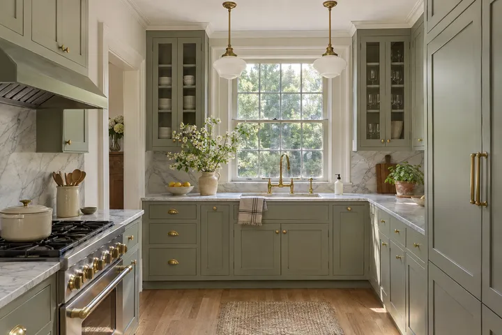
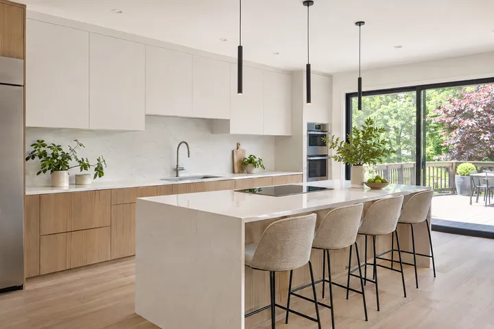
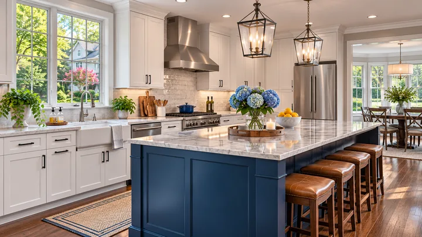

Kitchen remodeling in Maryland.
Blue Hammer Remodeling is based in Olney and plans kitchens for established homes in Montgomery and Howard County, and in DC and Northern Virginia within about 40 miles. Layout, cabinetry and surfaces are worked out together before anything is ordered.

The four decisions in a kitchen plan
Most kitchen plans come down to these, in roughly this order.
Layout
Where the sink, range and refrigerator sit decides how the room works. Keeping them in place is the simplest path. Moving them means new plumbing and wiring, and sometimes new ductwork.
Cabinets and storage
Stock, semi-custom and custom cabinet lines differ in how they are built and in the sizes and finishes offered. Drawer bases, pantry pull-outs and cabinets run to the ceiling are sized to what you keep.
Counters and surfaces
Quartz, quartzite and marble, compared for how each one stains, etches and wears. Look at samples in your own kitchen light before choosing.
Lighting and details
Task lighting over the counters comes first. Backsplash and hardware are then chosen together on one sample board.


Three sizes of kitchen project
A kitchen budget is built from a few things: how much of the layout changes, the cabinetry, the surfaces, the plumbing, gas and electrical work, permits, and the condition of the house. Here is how they shift from one kind of project to the next.
| Project | What changes | What drives the cost |
|---|---|---|
| Refresh, same layout | New cabinets, counters, backsplash, lighting and appliances. The sink, the range and the walls stay where they are. | Cabinet line and construction, counter material and the appliance package. |
| Full remodel, new layout | The sink, range or island moves. New plumbing and electrical runs, new flooring, and usually new lighting throughout. | How far plumbing, gas and wiring move, plus what is found once the walls are open. |
| Remodel with a wall opened | The kitchen is joined to a dining or family room. Whether that wall carries load is settled by an on-site structural assessment. | Structural design, permit review, and patching the floor and ceiling where the wall stood. |
Your price comes from your drawings and selections and from the conditions in your house, set out in a written scope. The steps are on the process page. Planning a bath at the same time? See bathroom remodeling.
What the first visit covers
We walk the room with you and measure before anyone talks about finishes. We note where the water, gas and electrical lines run, because they decide how far the layout can move. Then the wish list is sorted into essential and optional, so the scope can fit the budget.
Schedule a Consultation
Kitchen permits by address
Which office reviews a kitchen depends on where the house is. What your project needs is confirmed in writing before work is accepted.
Montgomery County
The Department of Permitting Services lists electrical work and interior alterations among home improvements that will likely need a permit. Installing or replacing cabinets and floor coverings is on its list of work that most likely will not.
Plumbing and gas
The County refers plumbing to WSSC Water. WSSC requires most plumbing projects and all gas work, including gas appliance replacements, to be done by a plumber or gasfitter who holds a WSSC Water license.
City of Rockville
Properties in the City of Rockville get electrical, plumbing, mechanical and structural permits from the City. Whether a Rockville address is inside city limits is checked for each property.
Howard County
For Clarksville, Ellicott City and nearby towns, the Department of Inspections, Licenses and Permits issues the building permit and the trade permits: electrical, plumbing, HVAC.
Kitchen remodeling questions
More remodeling questionsHow much does a kitchen remodel cost in Maryland?
Scope sets the cost more than room size does. The main factors are whether the layout changes, the cabinet line, the counter material, the appliance package and what is found once the walls are open. Permit fees and any structural work add to it. A written scope, based on your drawings and selections, turns those factors into a price.
Do I need a permit to remodel a kitchen in Montgomery County?
Often, yes. The Department of Permitting Services lists electrical work and interior alterations among projects that will likely need a permit, and it refers plumbing to WSSC Water. Replacing cabinets or flooring alone most likely does not need one. The City of Rockville and Howard County have their own permit offices.
Can the wall between the kitchen and the next room come out?
Sometimes. Nobody can tell from a floor plan or a photo whether a wall carries load. That takes an on-site assessment. If the wall is structural, the opening needs a structural design and a permit from the office that covers your address.
Can you remodel a kitchen without changing the layout?
Yes. Keeping the sink, range and walls in place is the simplest scope: new cabinets, counters, backsplash, lighting and appliances in the same footprint. It also keeps plumbing and gas work to a minimum.
Do you help choose cabinets and finishes?
Yes. Selections are part of planning. The cabinet style comes first, then the counters, tile, fixtures and hardware that go with it.
How long does a kitchen remodel take?
It depends on the scope, permit review, product lead times and the condition of the house. Once the project is defined, the schedule is confirmed in writing with the scope.
Schedule a consultation
Tell us the room, your timing and your ZIP code. We review each request and reply about the next step.
- Start with your priorities, budget range and timing
- Talk through scope, design direction and permits
- Confirm your home is inside our service area